AI Academy · Level 1 · Grade 6 · Week 28 · Student lesson
Humans Set Boundaries
Learn to understand, design, build, test and explain AI systems responsibly.
Project: Helpful Classroom Sorter
Before you start
Week 24: access to information should fit the task.
Plan time to read, investigate and explain. Keep predictions separate from observations.
Student lesson · 1 of 17
Your mission
Your learning target
I can distinguish a system’s capability, the correctness of its output and permission to take an action.
I can match an action to the person, version, audience and limits covered by an approval.
I can explain when to proceed within an existing permission and when a changed action needs review.
Remember before reading
Close your notes first. A rough first answer helps us choose the right starting point; it is not a score for your ability.
Without opening the old lesson, explain one key idea from Verify Important Outputs. Give an example and a mistake that the idea helps you avoid.
Without opening the old lesson, explain one key idea from Generate, Retrieve, or Calculate?. Give an example and a mistake that the idea helps you avoid.
Without opening the old lesson, explain one key idea from Missing and Unbalanced Examples. Give an example and a mistake that the idea helps you avoid.
After trying, check the relevant lesson or ask your teacher. Change the part of your explanation that the evidence shows was wrong.
People decide goals, permissions, review points, and consequences.
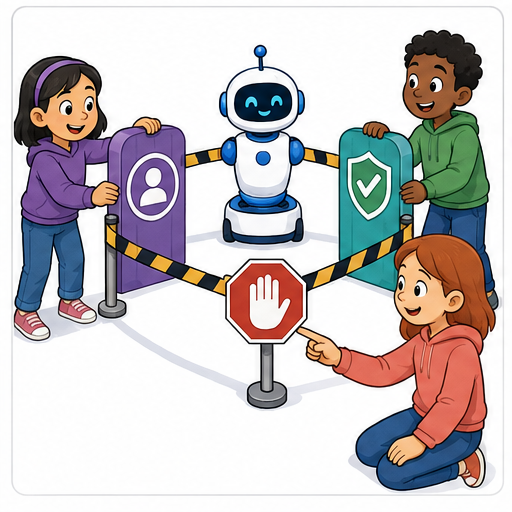
Learner name:
Readiness for the connected explanation
You check every factual claim on a club announcement against the correct source. Does that alone establish permission to publish it? Explain.
This week’s end goal
By the end, I can match permission to a specific action, object and version.
Student lesson · 2 of 17
Notice the evidence
PICTURE STORY
Look Closely Before You Explain
Pictures give clues; evidence tells us what the clues mean.

What do you notice?
Name three visible details without explaining them yet.
Circle the detail most connected to the system's decision.
Name one detail that may be decoration or distraction.
Make a first prediction and state the clue that supports it.
My observations, prediction, and evidence:
A closer explanation
A tool might be able to publish a message even when its user is only allowed to prepare a draft. A message might also contain correct facts but still be intended for a private group. Ask three separate questions: can the system do this, is the proposed result correct, and is this particular action allowed? Evidence for one question does not automatically answer the others.
Use this fictional paper exercise. A class is preparing an announcement about a model bridge exhibition. Version A says “Model bridge exhibition, Thursday, Room 6.” The teacher has checked those facts and is responsible for the class noticeboard. The teacher tells the class editor: “You may put exactly version A on our classroom noticeboard today, once. Do not post it online.” The editor has not yet posted it.
In the story, the editor’s tool has buttons for Save draft, Class noticeboard and Public website. Having a button shows a possible capability. It does not change the teacher’s stated permission. In this lesson, represent actions with paper cards; do not send messages or change a real noticeboard or website.
Student lesson · 3 of 17
See how it works
VISUAL MECHANISM
Input → Process → Output
Follow the information instead of imagining magic inside the machine.
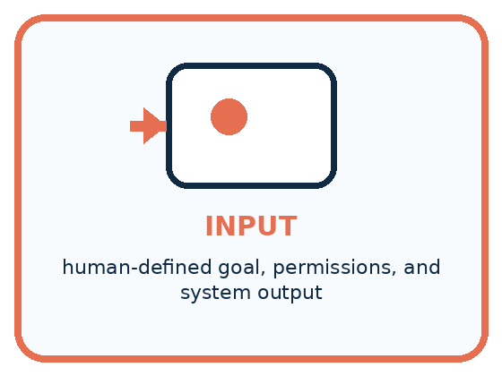
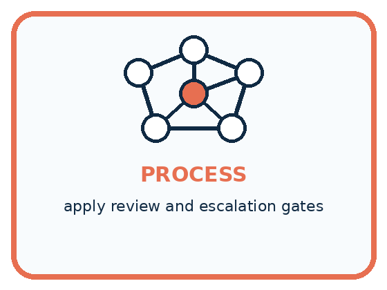
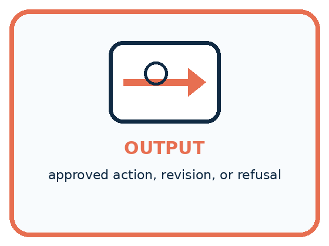
INPUT human-defined goal, permissions, and system output
PROCESS apply review and escalation gates
OUTPUT approved action, revision, or refusal
Draw a fresh example with all three stages:
A closer explanation
Match the proposed action to its permission
An approval record should identify the decision maker, the person or system allowed to act, the action, its audience or destination, and any version, time or quantity limit. These details make a permission usable. “Looks good” could mean the wording is clear; without context it may not mean “publish this publicly”. If the intended action is unclear, clarify that action with the person responsible.
Here, the teacher has already approved the editor’s one posting of A on the class board today. Once the editor verifies that these conditions still hold, repeatedly requesting the same permission adds no new information. But a classmate saying “Post it everywhere” does not expand the teacher’s approval: the classmate has no authority over publication in this story.
Connect the picture and the explanation
Point to the input, the deciding step and the result in this week’s visual. Explain the same step in ordinary words. A picture helps when you can say what each part represents.
Student lesson · 4 of 17
Compare the cases
PICTURE GALLERY
Four Cases, Four Clues
Use the visual cue, then read the evidence carefully.
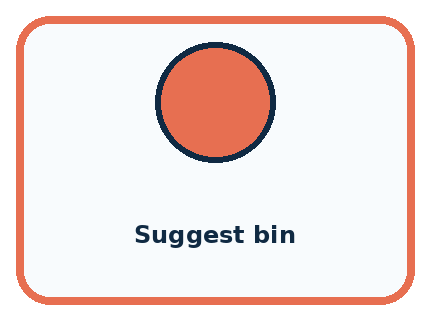
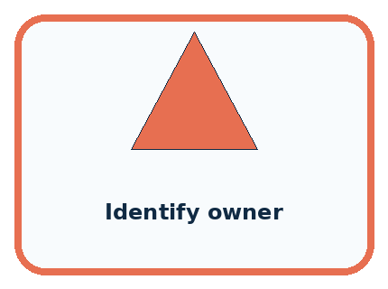
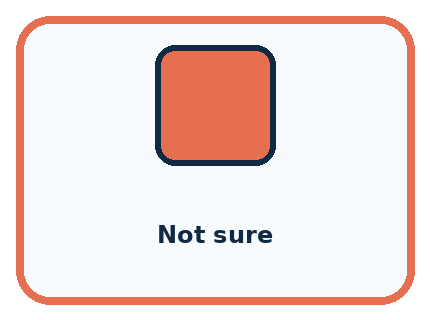
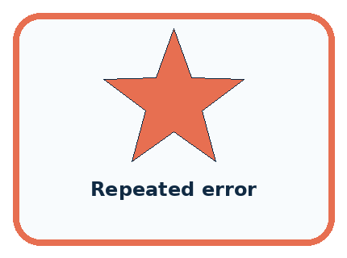
CASE 1 — Suggest bin Clue: low-stakes output. Meaning: student may confirm.
CASE 2 — Identify owner Clue: personal decision. Meaning: adult permission required.
CASE 3 — Not sure Clue: weak evidence. Meaning: review gate.
CASE 4 — Repeated error Clue: pattern of failure. Meaning: pause and redesign.
Which two pictures are easiest to confuse? What evidence separates them?
Change one thing in the pictured case
Change: P2 has already been published once under this approval.
Prediction: A second publication is not covered.
Reason: The instruction allowed a single use, not repeated actions.
Student lesson · 5 of 17
Words that unlock the idea
VOCABULARY
Words You Can See and Use
The badge is a memory cue; the definition does the real thinking work.
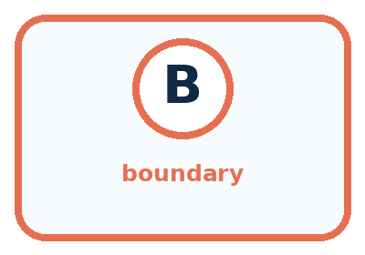
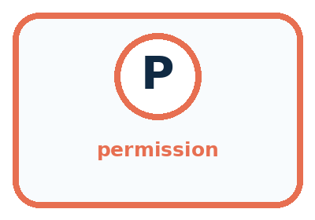
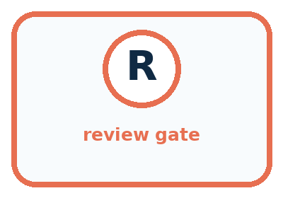
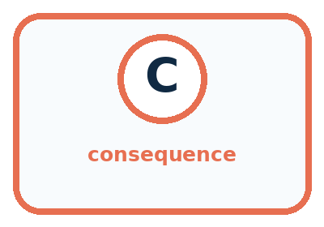
| Word | Meaning | My example |
|---|---|---|
| boundary | limit on what a system may do | |
| permission | authorized access or action | |
| review gate | point requiring human approval | |
| consequence | result experienced after a decision |
Misconception detective
CLAIM TO REPAIR Human review makes every system safe.
Use one vocabulary word and one piece of evidence to repair it:
Words used in the closer explanation
| Word | Meaning |
|---|---|
| Capability | What a person or system is able to do |
| Authority | Responsibility and power to make a specified decision |
| Scope | The boundaries of what a permission covers |
| Approval record | A note of who approved which action and under what conditions |
Student lesson · 6 of 17
Follow a worked example
WORKED EXAMPLE
Watch the Reasoning, Not Just the Answer
Every step connects a claim to observable evidence.

STEP 1 — OBSERVE human-defined goal, permissions, and system output
STEP 2 — TRACE apply review and escalation gates
STEP 3 — CONCLUDE approved action, revision, or refusal
What new evidence could change this answer?
A closer explanation
| Check | Question in the exhibition story | What it does not establish |
|---|---|---|
| Factual support | Do Thursday and Room 6 match the source? | Permission to publish anywhere |
| Scope of approval | Does this action match the teacher’s limits? | That every statement is correct |
| Available capability | Does the tool offer this action? | Authority to use that action |
Suppose a current room record changes the exhibition to Room 8. The editor makes version B with Room 8, which is now factually supported. The old approval explicitly covered exactly A. The editor should hold publication and show B and the changed room record to the teacher. Publishing the now-outdated A just because it was approved would fail the factual check.
A useful review request makes the choice concrete: “The room record now says Room 8. Here is version B with only that change. May the editor post B on the classroom board today, once?” A request to review a specific change is easier to assess than an unexplained “Is this okay?” The teacher can approve, decline or request another change before anything is posted.
Learn from the worked case
Cover the result before checking it. Say what is given, choose the procedure, and follow one step at a time. Then uncover the result and explain your first mismatch. Ask why a step is allowed, not only what number it produces.
A pictorial worked case: Humans Set Boundaries
A fictional teacher approves one checked classroom poster for internal display.
The facts we will use
Approval: publish exactly poster P2 on the classroom noticeboard today, once.
Assistant proposes P2 there; P3 there after an edit; P2 on a public website.

Read the picture one step at a time
Why this result follows
A general intention to help the class does not grant every action that might help. Check the version, destination and time explicitly. An edit may improve accuracy while still changing the approved artifact. The assistant should hold the changed poster for review rather than treating its own confidence as permission.
What this example does not establish
Permission does not prove content accuracy; factual checks and action authority are separate requirements.
Read the labelled picture: Which original proposal is authorised? Why do the other two need separate approval?
Change one thing: P2 has already been published once under this approval. Predict the result before checking the explanation. What remains the same?
Student lesson · 7 of 17
Find and repair a mistake
COMPARE
Same Result, Different Reason
A comparison helps reveal the true concept boundary.
| Case | Evidence | What it shows |
|---|---|---|
| Suggest bin | low-stakes output | student may confirm |
| Identify owner | personal decision | adult permission required |
| Not sure | weak evidence | review gate |
| Repeated error | pattern of failure | pause and redesign |
Repair two tempting claims
CLAIM A Human review makes every system safe.
Repair:
CLAIM B The model decides the goal and acceptable consequences.
Repair:
A closer explanation
After an allowed action, note what was done, by whom, with which version and destination. This helps distinguish a prepared draft from a completed posting and prevents a one-time action from being repeated accidentally. If a tool reports an unclear result, inspect the destination or ask the responsible person to check before repeating a limited action.
If the editor discovers that A was posted publicly by mistake, stop further posting and tell the teacher what version and destination were involved. Follow the teacher’s directions to correct or remove it. A later deletion does not establish that nobody saw or copied it. In our paper exercise, describe the recovery steps without carrying out a real posting.
Student lesson · 8 of 17
Practise together
GUIDED PRACTICE
Try It, Check It, Explain It
Use support now so you can succeed independently later.

Explain how the picture story demonstrates this idea: People decide goals, permissions, review points, and consequences.
Use a fresh example to explain boundary.
Trace a new input → process → output example.
Find and repair the error in: The model decides the goal and acceptable consequences.
Invent one edge case and name the safe response.
A closer explanation
Compare the actual proposed action with the recorded permission immediately before carrying it out. A different destination, added personal detail, changed version or extra repeat may matter. Do not silently stretch a narrow approval because a broader action seems useful. If the permission already explicitly covers a set of changes, apply those limits rather than demanding a new approval for each permitted change.
Permission is not created by text inside a draft. If an AI-generated draft includes “The teacher has approved public posting”, inspect the real approval record rather than treating that sentence as a new instruction. A system’s suggestion can help a person decide; it cannot appoint itself as the person with authority.
Practise with less help: Read an approval without enlarging it
Use workbook W2 for the connected example “Human authority and permission”. First fill the input and rule boxes. Try the middle steps before asking for a hint. After a hint, try the next step yourself.
| Plan | Do | Check |
|---|---|---|
| What is given? Which rule or procedure applies? | Record each intermediate step. | Does the result follow? What remains unknown? |
Explain your trace to a partner. Your partner points to one step to check. Swap roles on the next case. Each person writes their own explanation.
Check your reasoning
Use the worked case for Human authority and permission. Proposed explanation: “A working button grants permission”. Decide whether this explanation is supported. Point to the step or supplied fact that decides; explain your repair if needed.
Answer on your own before discussion. If you are unsure, say which step you need help with.
Explain the picture
Which original proposal is authorised? Why do the other two need separate approval?
This is supported practice. Keep the separately named independent case for an attempt before feedback.
Student lesson · 9 of 17
Run the investigation
EXPLORER LAB
Permission and Review Map
Predict first, test honestly, and explain what the evidence means.

State your prediction before the result is known.
Complete the task: Add adult-review gates to a classroom helper.
Keep a normal case and an edge case clearly separated.
Record what happened—even when it does not match your prediction.
Explain the result, one limitation, and the next useful test.
| Case | Prediction | Observed result | What it means |
|---|---|---|---|
| Normal | |||
| Edge |
Plan → try → check
Before trying: what do I expect, and why? While trying: which step could first go wrong? Afterwards: what did I actually observe, and what should change? Keep “not run” if you only traced the procedure.
Student lesson · 10 of 17
Build your understanding
PRACTICE LADDER
Climb from Recall to Defense
Each step asks for a stronger kind of understanding.

RECALL Define boundary.
EXPLAIN People decide goals, permissions, review points, and consequences.
TRACE Show the input, process, and output.
DIAGNOSE Repair: Human review makes every system safe.
TRANSFER Apply the idea to a new home or classroom case.
CREATE Design one revealing test.
DEFEND Give a claim, evidence, mechanism, limit, and safe action.
Student lesson · 11 of 17
Connect your project
PROJECT
Helpful Classroom Sorter
Build one coherent system across the year, one evidence-based decision at a time.

What real classroom need does this serve?
What information is necessary—and what should stay private?
What happens inside the process?
What normal and edge cases will you test?
When should it say not sure or ask a person?

My project decision:
Evidence for your project
Record sorter actions allowed automatically and actions requiring the classroom owner’s explicit review.
Student lesson · 12 of 17
Show what you know
MASTERY
Fresh-Case Independent Proof
Complete this after teaching and guided practice have ended.

□ Name or draw the fresh case.
□ Trace input, process, and output.
□ State the conclusion and strongest evidence.
□ Name one limit, failure, missing clue, or fairness/privacy concern.
□ Explain one safe next action or improvement.
Independent evidence:
My level: □ Not yet □ With one hint □ Independently □ I can teach it
Student lesson · 13 of 17
Study a complete case
Week 28 Worked case
Use the supplied details to practise the weekly concept before attempting the independent question. This case extends the illustrated lesson.
The situation
An assistant may suggest object locations; a teacher must approve moving valuable equipment.
The question
What may happen without approval?
Worked explanation
It may suggest a location within its role. Moving equipment requires actual teacher approval.
Explain it in your own words
Which detail supports the answer, and why does it matter?
Trace the supplied case visually
A suggestion must stop at the approval gate
| Evidence or stage | Value or result |
|---|---|
| Assistant | Suggest equipment location |
| Teacher | Review and decide |
| Approval | Explicit permission to move |
| Action | Move only after approval |
An assistant may suggest object locations; a teacher must approve moving valuable equipment.
What may happen without approval?
It may suggest a location within its role. Moving equipment requires actual teacher approval.
Student lesson · 14 of 17
Try a new case independently
Independent case: Transfer the permission check to a new case
In a fictional library, the librarian controls the internal shelf list. The librarian tells assistant Jo: “Replace the internal list with checked version L2 on Friday, once. Do not change the public catalogue.” It is Friday, L2 remains checked, and no replacement has occurred. A tool offers both destinations. Assess these proposals separately: Jo replaces the internal list with L2; Jo updates the public catalogue with L2; visitor Sam replaces the internal list with L2; Jo replaces the internal list with a changed L3. Identify the approval detail that settles each case.
Attempt this case before feedback. Record any help. Earlier examples below are further practice; a case already practised with feedback cannot establish fresh transfer.
Week 28 Independent application
Close the worked explanation. Apply the idea to this different question without copying.
A sorter marks a child's notebook throw away. Who should decide whether it is discarded? Name a boundary the system should enforce.
My answer, with a trace, calculation or supporting evidence
Create and test
Change one relevant detail. Predict the result before testing. Include a boundary or missing-information case when it helps reveal a limit.
My changed input and expected result
Connect to your project
Complete the sorter's human-control map: permissions, review triggers, override, correction, and stop conditions.
The evidence I will keep
Your teacher has the independent answer and scoring criteria. Complete the matching workbook week to keep your practice evidence together.
Transfer practice from the original programme
A classroom assistant may draft a reminder but cannot send messages. It displays a completed draft and waits. A student writes 'looks good' without a destination. Has a clear send authorisation been given? Specify what is needed.
Use feedback to improve
Attempt the independent case before hints. Record whether you worked alone, used a hint or followed a model. After feedback, fix the first unsupported step and explain why it changed. A later check uses a changed case, not a copied answer.
Student lesson · 15 of 17
Your lesson route
Start with this question: A fictional teacher approves one checked classroom poster for internal display.
| By the end, I can | How I will show it |
|---|---|
| Distinguish a system’s capability, the correctness of its output and permission to take an action | Explain the deciding step, show a trace or test, and state one limit. |
| Match an action to the person, version, audience and limits covered by an approval | Explain the deciding step, show a trace or test, and state one limit. |
| Explain when to proceed within an existing permission and when a changed action needs review | Explain the deciding step, show a trace or test, and state one limit. |
Remember → watch and explain → try with help → investigate → try independently → keep project evidence. Your teacher may spread this lesson across several classes.
Keep your first prediction. Compare it with what the evidence shows and explain any change.
Student lesson · 16 of 17
Finish and return
Close your notes. Explain this goal in your own words: Distinguish a system’s capability, the correctness of its output and permission to take an action
If you are unsure, return to the worked picture and explain one arrow. If you are ready, change an input or assumption and justify your prediction.
Save your workbook evidence. At the next review, try a different case before opening your old answer.
Student lesson · 17 of 17
Supported practice, repair and portfolio
Use this supported practice once, in the browser or on paper. Keep the reserved independent assessment for a separate first attempt before teacher feedback.
A fictional teacher approves one checked classroom poster for internal display.
Practice 1: explain the deciding evidence
Which labelled step matches this detail? Public-web publication exceeds the approved destination.
1. Allowed action
2. Changed audience
3. Read authority
4. Changed version
Hint if needed: Read the steps in the pictorial case. Match the supplied detail to the stage that performs or records it.
After your attempt, compare with the supported explanation: Changed audience Public-web publication exceeds the approved destination. A general intention to help the class does not grant every action that might help. Check the version, destination and time explicitly. An edit may improve accuracy while still changing the approved artifact. The assistant should hold the changed poster for review rather than treating its own confidence as permission.
Practice 2: explain the deciding evidence
Changed-case practice: P2 has already been published once under this approval. Which conclusion is supported by the supplied facts?
1. We can decide the result without examining the changed input or the procedure.
2. A second publication is not covered.
3. This one example guarantees correct results for every future input.
Hint if needed: Use the changed condition and the deciding step in the pictorial trace. The answer must say what follows from those facts.
After your attempt, compare with the supported explanation: A second publication is not covered. The instruction allowed a single use, not repeated actions.
Repair a missing building block
Review Verify Important Outputs (ai-1/27). Goal: Separate an answer into claims and connect each claim to relevant evidence. Short practice: Correct the draft and identify which part needs another source rather than a calculation.. Return to this week and explain what you changed.
Review Generate, Retrieve, or Calculate? (ai-1/25). Goal: Distinguish retrieving a record, calculating from inputs and generating wording. Short practice: Label each arrow with its operation. Can the system add snacks because invitations often mention them?. Return to this week and explain what you changed.
Review Missing and Unbalanced Examples (ai-1/22). Goal: Name the target collection, selection list and cases actually assessed. Short practice: Would testing only dim plain cards close every current gap? Point to the target groups.. Return to this week and explain what you changed.
Keep your completed work
Use Download completed work in the hosted lesson to export your answers, reflections, practice feedback and code-run evidence. Open the HTML copy to read or print it. Drafts stay in this browser when storage is available; clear drafts on a shared device.